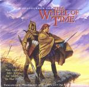

| Artist: | Robert Berry |
| Title: | A Soundtrack For The Wheel Of Time |
| Label: | Magna Carta MAX-9052-2 |
| Length(s): | 53 minutes |
| Year(s) of release: | 2001 |
| Month of review: | [06/2001] |
| 1) | A Theme For The Wheel Of Time | 3.36 |
| 2) | Return To Emonds Field | 3.55 |
| 3) | Song For Moiraine | 3.33 |
| 4) | Travelling The Ways | 3.05 |
| 5) | Spears And Buckler | 1.22 |
| 6) | Dream Walker | 2.04 |
| 7) | The Knowledge Of The Wise Ones | 1.09 |
| 8) | The Winespring Reel | 4.32 |
| 9) | The Halls Of Tar Valon | 0.57 |
| 10) | Search For The Black Ajah | 5.05 |
| 11) | Ladies Of The Tower | 3.12 |
| 12) | The Game Of Houses | 3.44 |
| 13) | Voyage Of The Sea Folk | 3.45 |
| 14) | Heart Of The Wolf | 1.09 |
| 15) | Journey Through The Waste | 0.57 |
| 16) | Lan The Warder | 1.15 |
| 17) | March Of The Trollocs | 3.14 |
| 18) | Rand's Theme (fanfare For The Dragon Reborn) | 4.30 |
| 19) | The Aiel Approach (dahl Of A Chant) | 2.10 |
After this rather up-beat opening we come to a still folky, but more somber side of the album. Return To Emonds Field has softly melodious keyboards, folky melodies, but also a strong focus on atmospheres that can be rather sinister. In this way the music is similar to the music of Colin Masson, but there are also parallels with Mike Oldfield and Tempest (but less folky). These tracks really make the title come true: it is a soundtrack. The music is however mostly comparable to Bjorn Lynne's similar project Wolves Of The Gods and the other three parts. Lynne's work is more symphonic and less folky and soundtrackish. The basic idea is the same however and I feel lovers of one will also like the other.
Acoustic guiter opens Song For Moiraine. Quite a nice subtle theme here with some flute like keyboards in addition to the far away sounding acoustic guitar. Quiet stuff. Then the music becomes more bombastic. The melody is the same, and has quite a bit of a Tempest feel. Traveling The Way finds us in dark spooky waters. Voiceless vocals and dark guitar chords make up this sinister track. Has a bit of that soundtrack formlessness, more sounds than music. Spears And Buckler continues the this approach, but is more forceful.
Low chords on the guitar open Dream Walker, a slow plodding vocal track. No light stuff this. Vocalist Andy Frazier has a low voice, typically American it sounds to me. Could well be a singer in an AOR band. The songs becomes a bit more bombastic towards the end. The very dynamic The Knowledge Of The Wise Ones continues with strong Orffian bombast.
It is not surprising that the folk returns on the merry The Winespring Reel. Compared to Tempest the music is more melodic and hence more likable. Quite a bit of pace in this one with strong guitar work (later a bit trite). There's something of Queen in the melody here somewhere. Very optimistic.
The Halls Of Tar Valon is another shorty with synthetic choir sounds. Again a spooky atmosphere. We move right into Search For The Black Ajah. This is typical soundtrack music with plenty of synth strings making for a tense atmosphere. Later we get some church organ and then the choirs return. A low rumbling sound seems to indicate the presence of something. Something dark.
Ladies Of The Tower is sung by Mastermind's Lisa Bouchelle. Too melodramatic and the melody is not great. I am now reminded of the combination New Age and Amerindian music, a combination I do not like to be reminded of (i.e. Christopher Franke on his New Age discs). At the end it becomes quite percussive and loud.
The Game Of Houses is a stately, folky tune. A weird combination maybe. The sound of the mandolin indicates the presence of Lief Sorbye. Voyage Of The Sea Folk is a jig like piece ending with some fanciful electric guitar. Strong solo that.
Heart Of The Wolf is a soundtrackish thing again. After Journey Through The Waste we come to soundtrackish but more melodic Lan The Warder. Here we find some nice rhythm guitar, subtle, but sufficient. With March Of The Trollocs the darkness in the music continues. A powerfully dark piece with strong orchestral leanings.
Rand's Theme (Fanfare For The Dragon Reborn) is one of the more melodic pieces. Acoustic guitar, melodies moving like slow rivers, romantic, but not overly. The orchestral ending leads up to a final dark part which leads up to the final track The Aiel Approach (Dahl Of A Chant). A rather weird conclusion to the album. The music has aspects of celtic music, but a religious feel. Monastery music in a way.